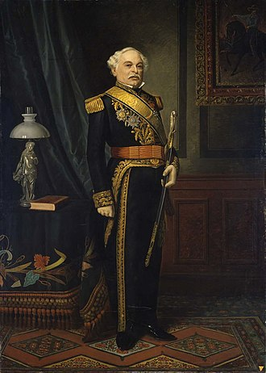

BIOGRAFIA
José Antonio Páez Herrera, nascido em 13 de junho de 1790 e falecido em 6 de maio de 1873, foi um
líder venezuelano que lutou contra a Coroa Espanhola ao lado de Simón Bolívar durante a Guerra de
Independência da Venezuela. Posteriormente, liderou a independência da Gran Colômbia.
Ele dominou a política do país durante a maior parte das duas décadas seguintes à obtenção da
independência da Gran Colômbia, servindo como presidente da Venezuela (1830–1835; 1839–1843;
1861–1863) ou como a figura por trás de presidentes marionete. Ele é considerado um exemplo típico
de caudilho sul-americano do século XIX. Viveu em Buenos Aires e Nova York durante seus anos no
exílio e faleceu nesta última cidade em 1873.
Páez nasceu em Curpa (atualmente parte de Acarigua), Estado de Portuguesa, na Capitania Geral da
Venezuela - parte do Império Espanhol. Sua avó paterna, Luisa Antonia de Mendoza y Mota, era filha
de Luís Rodríguez de Mendoza, natural de Icod de los Vinos, Tenerife (Ilhas Canárias). Ele tinha
origens humildes, sendo seu pai um funcionário de baixo escalão do governo colonial. Sua mãe, Maria
Violante Herrera, diz-se que nasceu em Quíbor, Lara, como uma das descendentes dos colonos alemães
Welser. Ela tinha o apelido de "La Catira de los ojos azules" (A loira dos olhos azuis [O termo
"catira" é uma forma feminina de "catire", uma gíria venezuelana para "loiro."]) Na infância, ele
foi forçado a trabalhar como um escravo. Aos 20 anos, Páez já era casado e ganhava a vida negociando
gado.
No final de 1810, ele se juntou a um esquadrão de cavalaria, liderado por um ex-patrão, criado com o
propósito de lutar contra o governo colonial. Em 1813, ele pediu licença de seu esquadrão com a
intenção de criar e liderar o seu próprio, o que fez, juntando-se ao Exército Republicano Ocidental
com a patente de sargento. Páez tinha uma personalidade cativante que o tornava muito querido entre
aqueles que o conheciam. Ele também era admirado por suas habilidades como cavaleiro e por suas
capacidades físicas.
